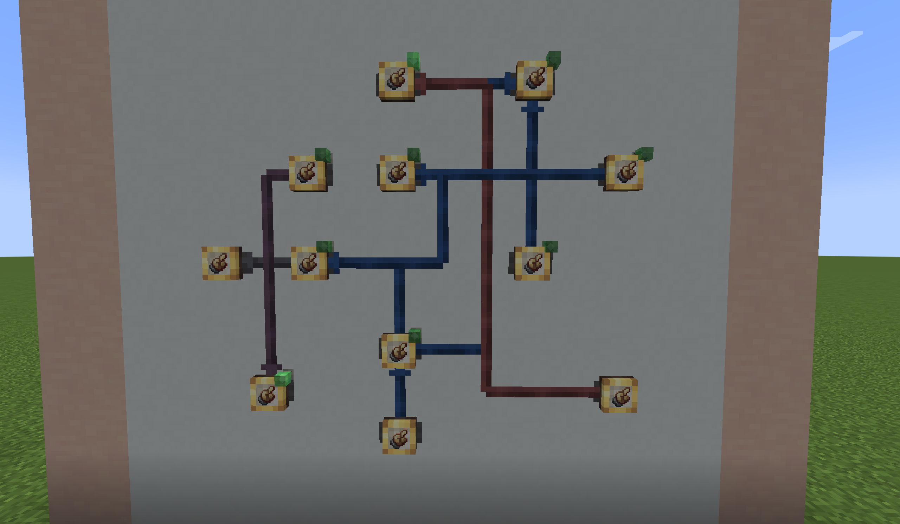
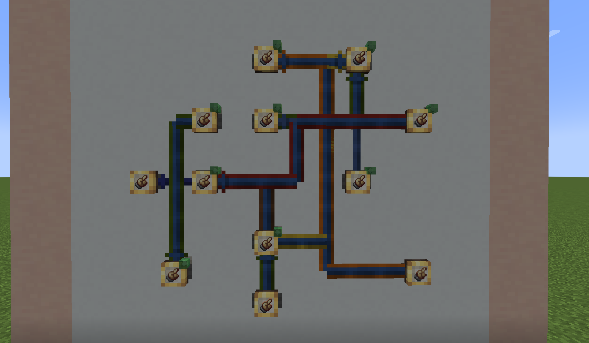
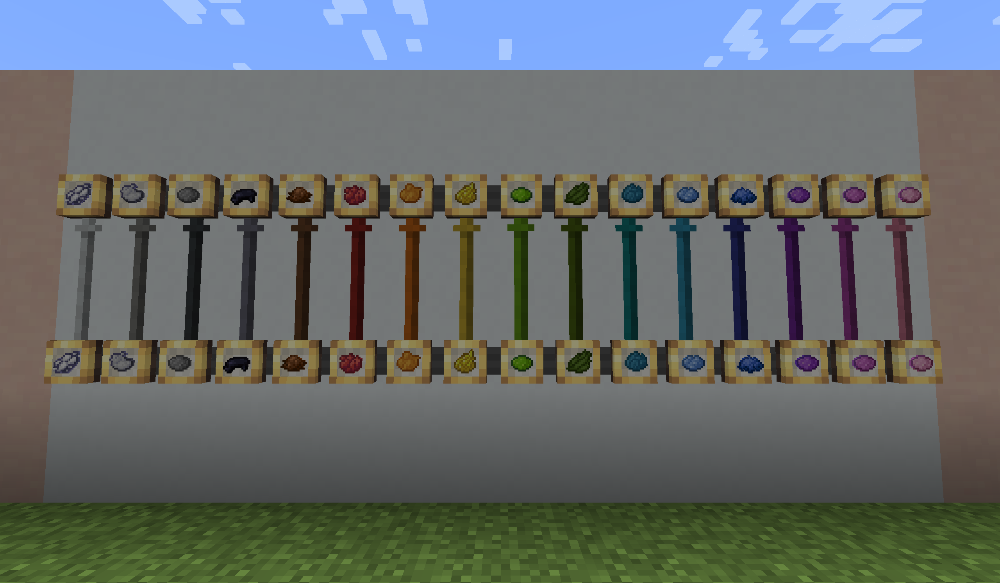

Create: Colored Connections 市场调研与后续开发建议
0.4.1 已经把「工厂仪表连线染色」这个独家生态位坐实：上线 33 天，Modrinth 累计 191 次下载（平台接口直查、已复核），关键词检索中没有第二款模组做同一件事。 真正的瓶颈不在功能，而在覆盖面与需求信号——当前只覆盖 1.21.1 + NeoForge 一条线，且可独立核实的社区反馈接近于零。作者已确认本期方向为：Configured 配置兼容、批量染色预览的渲染改善、以及多语言支持；版本移植不在本期计划内。
结论速览
产品与代码现状
模组定位明确：给 Create 6.0 工厂仪表的配方模式连线用 16 种原版染料着色，让高密度交叉网络保持可读。定位之外的设计边界也很清晰——红石与显示连线的颜色承载状态语义，因此永不染色；状态色（进行中 / 已满足 / 失败 / 闪烁）保留原版核心，只在外侧加染料描边。
| 版本 | 主要内容 | 对市场的意义 |
|---|---|---|
| 0.1.0 / 0.1.1 | 单条连线染色、颜色继承、状态色保留、悬停抬升；染色不消耗染料（0.1.1 起） | 确立「颜色是组织标签，不是合成产物」的产品立场 |
| 0.2.0 | 路径染色 + 绿色预览光束、音效与粒子反馈、配置文件、首次放置提示 | 从「单条」升级到「成组」，开始解决整片网络的记忆负担 |
| 0.3.0 | 护目镜追踪：同色组整体高亮、同工厂其余连线灰化、HUD 追加连线/仪表/状态计数与缺料提示 | 从纯视觉工具变成「读网络」的诊断工具，是当前最接近差异化的能力 |
| 0.4.1 | Factory Controller 兼容：GUI 内连线染色、tooltip 显示染色、蓝图导入带色 | 直接兑现玩家首条需求，带来迄今最大单版本流量[16] |
来源：项目自带 CHANGELOG.md 与 README.md（用户提供）。
实现要点
代码规模为 33 个 Java 源文件、约 4,339 行，包含两套 Mixin 配置（主配置与 Factory Controller 专用的版本门控配置）以及 6 个网络包类。
最值得关注的结构性决策是颜色的存放位置：颜色以「维度 SavedData + 面板坐标（FactoryPanelPosition）」为主键持久化，而不是写进面板自身的 NBT。这一设计让颜色随世界存档、跨会话同步都很自然，但也决定了颜色的可迁移性边界。
现状缺口
以下缺口来自本轮对 33 个源文件与项目文件的检索。需要说明的是，其中「缺少某项能力」属于检索未发现，而非已确认不存在；据此改动前建议再确认一次。
- 无键位绑定。染色必须手持染料（世界侧）或把染料拾到光标上（FC GUI 侧），会占用主手或光标槽，缺少「按住某键打开调色板」这类不占位的交互。
- 无颜色预设、取色与批量刷色。目前只能逐条右键；缺少「从某条线取色后刷给另一条线」以及把一组已有连线一次性改色的操作。
- 无撤销。路径染色在构建阶段可以退掉最后一个仪表，但染色动作本身没有回退，误操作只能靠黑色染料重置后重来。
- 颜色没有语义层。16 种染料只是色号，没有「这条线叫铁板线」的命名能力，护目镜 HUD 也无法显示颜色名。
- 路径预览不体现目标颜色。预览光束固定使用 Create 的绿色
0x95CD41，与即将应用的染料颜色无关；几何以 0.15 格悬浮在表面外，并由每个客户端 tick 重建。作者已把这一块的修复与改善列为本期重点。[16] - 原版蓝图路径未打通。0.4.1 只让 Factory Controller 的蓝图导入携带颜色；由于颜色以世界内坐标为主键，把仪表墙作为方块结构复制到新坐标时颜色不会跟随，建议先实测确认再决定是否补齐。
- 本地化只有 en_us 与 zh_cn 两种语言文件。全部玩家可见文案已走
Component.translatable（并复用原版与 Create 的键，如color.minecraft.*、item.minecraft.*_dye），自有键共 17 个，因此补语言只需新增 lang JSON，不必改动代码。 - 多人部署没有友好提示。README 明确要求客户端与服务端同时安装，但本轮审阅未确认存在「服务端缺装」时的显式提示逻辑，建议核实后决定是否补一段降级提示。


图片来源：项目自带截图 images/vanilla-network.png 与 images/dense-network.png（用户提供，2026-09-24 访问）。
16 种染料的实际效果决定了这个模组的上限——也说明「颜色够用」不是问题，问题在于玩家是否能记住每种颜色代表什么。

图片来源：项目自带截图 images/all-16-colors.png（用户提供，2026-09-24 访问）。
市场表现
模组于 2026 年 8 月 22 日首发，截至调研日共 5 个公开版本，全部为正式版（Modrinth 侧已独立复核）。下表同时列出 CurseForge 数据：它来自一次平台页面快照（总量 806 与各文件下载量之和 802 自洽），但本次复核时 CurseForge 对自动化访问返回 403，未能二次验证，引用时请按「未复核」对待。
| 指标 | Modrinth | CurseForge |
|---|---|---|
| 累计下载 | 191 | 806 |
| 关注 / 点赞 | 7 关注 | 页面未公开该字段 |
| 公开版本数 | 5 个（全部 release） | 5 个 |
| 最后更新 | 2026-09-13 | 2026-09-13 |
| 首发时间 | 2026-08-22 | 约 1 个月前（2026-08） |
| 支持版本 / 加载器 | 1.21.1 / NeoForge | 1.21.1 / NeoForge |
| 用户评论 | 平台不提供评论区 | 6 条 |
| 分类 | Technology / Decoration / Game Mechanics | Mods → Create |
来源：Modrinth 项目与版本接口（已复核）、CurseForge 项目页与文件列表（单次页面快照，未复核）。[1][2][3][4]
把两个平台的版本下载量拆开看，能够读出模组当前的传播方式：Modrinth 的流量几乎被最新版本吸走，而 CurseForge 侧仍有相当比例的用户停留在 0.3.0。
结论：Modrinth 侧 0.4.1 一个版本占 132 / 191 次下载（约 69%，已复核），增量用户几乎都从最新版本进入；CurseForge 快照则显示 0.3.0 的单文件下载（312 次）高于 0.4.1（197 次）——若该快照成立，说明早期用户尚未完成升级，这一点需要作者在自己的后台数据中确认。
渠道与曝光结构
GitHub 仓库承担源码托管与 Release 分发：0 star、0 fork、0 issue、0 PR，6 个 Release 附件的累计下载合计仅 4 次（逐条计数已复核）。
作者已明确反馈渠道以评论区为主（玩家普遍不会使用 Issue），因此仓库不承担社区反馈职能——这属于既定选择而非缺陷；不过 README 里「open an issue」的引导与该策略不一致，建议顺手删掉，以免玩家走错地方。另发现一处发布细节：v0.1.0 这个 Release 下挂的 jar 文件名是 0.1.1，属于版本号粘贴不一致，建议顺手修正。[6][16]
第三方曝光同样缺失：本轮按模组名、模组 ID 与作者名组合检索，未发现 MCmod 百科、9minecraft、MCBBS、Reddit 或视频平台的收录与讨论，也未发现整合包收录。需要说明这是检索式结论（搜索引擎与站点检索均无结果），不构成「绝对不存在」的证明。 可以确定的是，工作区中已存在 0.2.0 阶段准备的中文发布物料（MC 百科发布说明、词条描述与英文 CurseForge 描述），内容停留在 0.2.0；这部分是本地文件可核实的。[16]
Modrinth 上最新版本占全部下载的 69%（132 / 191，接口直查已复核），说明「功能迭代本身」就是当前的获客手段，而平台描述、画廊与第三方渠道尚未形成独立来源。该结论只依赖 Modrinth 数据，不依赖未能复核的 CurseForge 计数。
竞争格局
「Create 工厂可读性」已经是一个被验证的需求池，但连线染色这一细分位置目前没有竞争者。真正的威胁来自另一种解法：把仪表墙整体搬进 GUI 的 Factory Controller，它从根本上绕开了「墙上连线看不清」的问题——这也解释了为什么它成为玩家的第一条兼容需求。
| 模组 | 下载量 | 关注 | 游戏版本 | 加载器 | 与本模组的关系 |
|---|---|---|---|---|---|
| Create: Vibrant Vaults | 896,934 | 227 | 1.20.1 / 1.21.1 | Fabric / Forge / NeoForge | 方块级染色（储物仓、打包机等），需求池最大的相邻品类 |
| Create: Extra Gauges | 502,699 | 160 | 1.20.1 / 1.21.1 | Forge / NeoForge | 仪表逻辑扩展；2.0.5-rc1（2025-08-25）的更新日志含「修复面板渲染与连线颜色完全错乱」，是渲染注入脆弱性的现成教训 |
| Create: Factory Controller | 9,137 | 36 | 1.20.1 / 1.21.1 | Forge / NeoForge | 唯一实质替代方案（虚拟仪表盘）；0.4.1 已完成兼容 |
| Create: Colored Connections | 191 | 7 | 1.21.1 | NeoForge | 本模组：唯一对配方连线染色的模组 |
来源：Modrinth 项目接口，四项数据均为直查已复核。[12][13][1] 除这四款外，Modrinth 上还有若干与仪表可用性相关的小模组，本轮未逐个核实其名称与下载量，因此不在此列具体数值。[15]
把四个模组的累计下载放在同一坐标上比较，落差本身就构成结论：本模组与最接近的相邻品类之间隔着两个数量级，而与同样处于早期阶段的 Factory Controller 处在同一量级区间。
结论：连线染色的直接邻居已在十万量级，本模组仍在百量级——差距不是功能差距，而是「被这个需求池看见」的差距。这也意味着曝光投入的边际回报远高于继续堆功能。
生态位判断
- 独占但极小。没有第二款模组染色仪表连线，因此不存在直接价格/功能竞争；同时也没有同类产品验证过这条细分需求的规模上限。
- 替代威胁来自 FC 而非同类。Factory Controller 把仪表墙收进单方块，是对「密集网络难以阅读」的更彻底解法；与本模组是互补关系，但若 FC 自行加入连线配色，互补会迅速变成竞争。
- 相邻品类提供了需求证据。Vibrant Vaults 与 Extra Gauges 的量级证明玩家愿意为「工厂更好读」安装模组，本模组的定位与这群用户高度重合，问题在于尚未触达。
生态与版本环境
上游 Create 的版本线决定了这个模组的可服务范围，而当前结论非常明确：Create 官方支持的游戏版本只有 1.18.2、1.19.2、1.20.1 与 1.21.1，没有任何 1.21.4 / 1.21.5 / 1.21.8 分支。 因此针对更高游戏版本做适配规划没有意义，用户群实际上被锁定在 1.21.1 与 1.20.1 两条线上。[8][10]
本项目编译基线为 Create 6.0.11-300（官方 Maven 上可获取的 6.0.11 系列构建），而 Modrinth / CurseForge 上玩家能下载到的公开发布仍是 6.0.10+mc1.21.1（2026-04-21）。mods.toml 只声明 create >= 6.0.0，因此玩家会在 6.0.10 上安装一个针对 6.0.11 内部实现编译的模组——一旦两版之间的渲染或数据类签名发生变化，就会出现 Mixin 注入失败或链接错误。这属于必须优先收敛的兼容风险。[7][9]
Create 本体的 Modrinth 累计下载为 2637.8 万次、7,047 关注；官方放出的游戏版本线只有四条，其中 1.21.1 线的公开发布 6.0.10+mc1.21.1（2026-04-21）累计 499.1 万次下载，1.20.1 线的最新版本 mc1.20.1-6.0.8（2025-11-02）累计 673.1 万次下载——两条线都仍有真实规模。
加载器方面，Create 本体在 Modrinth 上只发布 Forge 与 NeoForge 版本；第三方 Fabric 移植的最新版本是 6.0.8.1+build.1744-mc1.20.1（2025-12-02），只覆盖到 1.20.1，不覆盖 1.21.1，因此 Fabric 线在短期内不具备投入条件。[7][14][11]
需要说明的是，本模组是否跟进 1.20.1 属于资源分配决策：本次调研未能找到可核实的玩家需求证据（唯一来源是一条未复核的评论，作者已确认没有该计划），因此报告不再把版本移植列为建议项。
结论：6.0.10 一个版本就占 1.21.1 线累计下载的约 63%（4,990,535 / 7,893,917）——玩家几乎全部跑在最新公开发布版上，这正是必须把编译基线对齐到 6.0.10 的现实依据，而不是把「已支持 6.0.11」当成已交付。
需求信号与反馈闭环
对一个小体量模组而言，最稀缺的资源不是功能点，而是可信的需求信号。作者已确认反馈以评论区为主（玩家普遍不使用 Issue），因此 GitHub 侧可核实的数据是 Issues 与 PR 均为 0；唯一存在玩家声音的渠道是 CurseForge 评论区（页面快照显示 6 条评论、其中 2 名玩家发声），而该渠道本次无法二次复核，下文引用请按「未复核」看待。
| 渠道 | 可确认信号 | 内容 | 结论 |
|---|---|---|---|
| CurseForge 评论 | 6 条（2 名玩家发声） | Factory Controller 兼容请求；1.20.1 可行性询问；一条正面评价 | 唯一存在玩家声音的渠道（单次页面快照，未复核）[5] |
| GitHub Issues | 0 | 无内容；仓库不作为反馈入口（作者已确认反馈以评论区为主） | 既定选择，不作为改进建议[6] |
| Modrinth | 0 | 平台不提供用户评论区 | 无法承接反馈，需要外部引导[1] |
| 第三方社区 | 0 | MCmod 百科、9minecraft、MCBBS、Reddit 与视频平台均无收录或讨论 | 存在明显的曝光与中文社区缺口[16] |
“Add compatibility with create: factory controller.”
“love it C:” ／ 并追问能否在 1.20.1 上运行；作者回复「官方 Forge 1.20.1 移植已经在我的路线图上」。
这两段对话的可用程度并不相同：Factory Controller 兼容这条需求有项目自身的 CHANGELOG 与 README 佐证，可以当作已发生的事实；而 1.20.1 相关表述只有单次抓取的评论页面作为来源，且已被作者本人否认。这也正说明，把评论区里的转述当作开发承诺来引用是不可靠的——底层原因则是可核实的一手反馈本身太少。
后续开发优先级建议
建议把接下来的工作分成三层：P0 是「装得上、说得清」（确认兼容基线、同步平台描述），P1 是作者已确认的本期方向（Configured 配置兼容、有状态连线拐角、预览光束拐角、复用原版使用动作、多语言、批量染色交互），P2 为可选增强。两条判断依据贯穿全部建议：兼容基线与玩家实际版本的一致性，以及每项工作是否能在现有代码基础上落地、不引入版本移植那样的额外维护面。
P0 立刻处理（1–2 周）
- 理由
- 作者提供的版本页截图显示 Create 公开最新为
6.0.10+mc1.21.1（1.21.1 / NeoForge，约 5 个月前，4.99M 下载），与接口抓取完全一致；而仓库gradle.properties目前 pin 的是6.0.11-300。若沿用 6.0.11 系列作为编译基线，需要确认它在 6.0.10 环境下也验证过。[9][16] - 影响
- 决定模组在主流玩家环境里是「稳定可用」还是「偶发崩溃」；当前公开渠道尚无可核实的负面记录，这个状态值得守住。
- 下一步
- 本次会话已完成切换与验证：编译基线改为
6.0.10-281、mods.toml 的 create 依赖区间收紧为[6.0.10,)、中英描述文档同步改为「Create 6.0.10+」，runClient正常启动（日志确认 Create6.0.10、NeoForge21.1.248、本模组0.4.1，Factory Controller 门控通过，无 Mixin 错误）。剩余动作只有把「已验证版本」写进 README。另需记住一个坑：6.0.10的发布元数据把 Create 自身依赖标为 runtime，addon 必须显式声明 Ponder / Registrate / Flywheel，否则编译期看不到 Catnip 等类。
- 理由
- 工作区内的中文与英文发布物料仍停留在 0.2.0，而功能已经迭代到 0.4.1；同时「红石/显示线不染色」「需双端安装」这类设计边界容易被误判为 bug。现已产出 0.4.1 的中英双语描述文档可直接使用。
- 影响
- 直接影响转化率与无效反馈量，是成本最低的收益项。
- 下一步
- 把 0.4.1 的 FC 兼容、护目镜追踪、路径染色写进 Modrinth / CurseForge / MC 百科，并同步画廊截图；把「不做什么」单独列一节。
P1 作者确认的本期方向（2–6 周）
下列三项由作者确定为本期目标；原报告建议的 1.20.1 Forge 移植已移出建议列表，原因见「生态与版本环境」一节。
- 理由
- 本模组已有 8 个配置项（染料消耗、首次提示、反馈特效、悬停抬升、护目镜追踪与追踪距离/读数、FC GUI 染色），但玩家只能手工编辑
config/create_colored_connections-common.toml；Configured 在 1.21.1 上有 NeoForge 发行版（最新configured-neoforge-1.21.1-2.6.3），其官方说明为「支持使用配置系统的模组，开发者无需额外写代码」。[17][18] - 影响
- 把「改配置」从文本编辑变成游戏内点击，直接降低普通玩家与整合包作者的使用门槛，也顺带缓解配置不当带来的困惑。
- 下一步
- 先实测 Configured 能否识别本模组并列出全部 8 项，重点确认两点：COMMON 类型在单人与多人下的归属是否符合预期，以及客户端专属项（渲染、追踪）能否在客户端本地生效。若部分项不可见或不生效，最可能的改造是把客户端专属项从 COMMON 拆到 CLIENT 类型。
- 理由
- 活动状态连线保留原版状态色核心，染料描边由每一段线段各自用一个宽度放大 2× 的 underlay 画出来（
FactoryPanelRendererMixin.createcc$underlay，沿宽度轴 scale 2 → 每侧 1px），线段之间没有转角处的联合（斜接 / 补角）处理；首段还要叠两层（lines 2× 与 arrows 1.5×）来对齐箭头宽度，活动线另有-0.0625的层级偏移以避免核心穿透水平线描边。放大截图显示的正是转角处描边台阶与错位、内侧出现一块方形叠色。另已核对 Create 源码：上游连线模型只有line / dotted / arrow共 12 个文件、元素尺寸 0.5 格长 × 0.25 格宽，没有任何转角模型——上游转角就是两段直角相接，这块没有可照搬的先例。 - 影响
- 转角是仪表墙最常见的形态，「状态色 + 染料描边」的辨识逻辑一旦在转角断裂，密集网络的可读性会在最需要的地方失效。
- 下一步
- 先定转角的目标形状（斜接 vs 补角方块），再决定是给转角单独补一块描边几何，还是把相邻两段的描边在端点各自延长半个线宽重叠；实现后按 4 种转角方向 × 闲置 / 活动两种状态逐张截图核对。
- 理由
- 预览把折线按共线合并成「跑段」，每段是一个世界对齐长方体，转角靠两端各延长半个束宽来重叠补角（
BatchPreviewRenderer＋WorldAlignedBeamOutline）。截图里垂直段末端在交汇处出现台阶状缺口与端点参差，说明「两段各自为盒」的补角在短段与交汇处并不能总是落齐；此外预览仍是固定绿色0x95CD41，不体现目标染料颜色。Create 侧同样没有补角先例（世界几何只有Outliner的框与线），可参照的反而是本项目预览自身的「半宽重叠」做法。 - 影响
- 预览是确认前唯一的反馈，转角缺口会让玩家怀疑要染的路径是否真的接上了，直接影响「敢不敢一次刷一整条线」。
- 下一步
- ①按转角、交汇、短段三类场景复现并记录；②把补角从「两端各延长半宽」改为按转角生成立方体或整段延长，确保任意段长都填满；③可选：预览按目标染料着色；④长路径与大工厂下的开销复核。
- 理由
- 当前
DyeInteractionHandler命中连线时只调用event.setCanceled(true)，没有设置取消结果，因此客户端不会播放原版的「使用物品」反馈（挥臂动画与使用手感）。Create 自身处理同类自定义右键时用的是event.setCancellationResult(InteractionResult.SUCCESS)（如EdgeInteractionHandler、LinkHandler），个别场景再补一次player.swing(event.getHand())（如ChainConveyorConnectionHandler）——这是库内现成的写法。 - 影响
- 染色是高频操作，缺少原版使用反馈会让动作显得「没吃到点击」；复用原版动作后手感与其它 Create 交互一致，也顺带避免玩家重复点击造成的重复发包。
- 下一步
- 在命中连线、进入/确认路径模式这几处把取消结果设为
SUCCESS（必要时补swing），同时保留阻止打开仪表面板与放置方块的逻辑；双端保持一致，避免客户端与服务器判定分叉。可一并决定是否改用原版染色音效SoundEvents.DYE_USE，或保留现有 Create 连线音效。
- 理由
- 全部玩家可见文案已走
Component.translatable，自有键只有 17 个，另有若干键复用原版与 Create（如color.minecraft.*）；补语言只涉及 lang JSON，不需要改动逻辑代码。 - 影响
- 这是性价比最高的覆盖面扩展——不涉及版本移植，也没有渲染风险，却能直接改善非中英玩家的第一印象，也是整合包作者挑选模组时会留意的细节。
- 下一步
- 优先补常用语言（ru_ru、de_de、fr_fr、ja_jp、es_es、pt_br、ko_kr）；在 README 注明欢迎翻译 PR；若希望长期维护，可参考上游 Create 的做法接入 Crowdin。
- 理由
- 选路的三种手势都是右键、只靠 shift 区分语义（
handlePathClick追加 /resolvePendingClick确认或取消）；模组没有任何键位绑定，取消只能右键空白处，贴墙场景无空白时只能等 60 秒超时（TIMEOUT_MS，且清除无提示）；step()只支持从末尾回退，链中间扫错需整条重来；链由准星扫过自动增长，密集墙容易多挂漏挂；确认前既看不到「将染 N 条连线」的计数，也看不到目标颜色（预览固定绿色）。Create 自身的同类流程（FactoryPanelConnectionHandler起手连接、SchematicAndQuillHandler两步选区）给出的约定是：shift = 中止、提示每 tick 持续刷新、起手对象用两色交替的 Outliner 框闪烁高亮、失败给具体原因（红色 +DENY音效）、确认前先显示结果规模，并把 Shift/Ctrl/Alt 注册成可改键的 modifier——本项按这些约定对齐。 - 影响
- 批量染色是本模组的主打操作，交互一旦需要「记住地理位置的右键语义」，在真实仪表墙前就会退化成逐条点击，功能价值被抵消。
- 下一步
- 先由作者给出体验后的具体症状清单，再按性价比落地：①加确认 / 取消 / 逐步回退键位（保留旧手势兼容）；②选路期间在 HUD 显示将染连线数、仪表数与目标颜色名；③补齐静默失效的可见反馈，并评估延长或预警超时。
P2 可选增强（按需求排期）
- 理由
- 16 色已足够区分，真正的负担是「记住哪个颜色是哪条线」；护目镜 HUD 已经具备展示读数的基础设施。
- 影响
- 把产品从「上色工具」升级为「网络说明书」，也是上游若加入原生染色后最难被替代的部分。
- 下一步
- 允许为颜色指定别名（如「铁板线」）并随存档保存；护目镜追踪时显示别名与图例；提供导出配色方案用于分享与整合包预设。
- 理由
- 当前每一次染色都要手持染料、逐条操作；密集网络中改一组的颜色成本过高。
- 影响
- 直接改善高频操作体验，也是同类工具型模组普遍缺失的能力，可形成差异化。
- 下一步
- 增加「取色 / 刷色」两段式操作与颜色预设面板，用键位打开以避免占用主手；为批量操作补一个可撤销的最近操作记录。
- 理由
- FC 是最接近的替代解法，也是玩家第一条需求的来源；现有整合只到「能染色」。
- 影响
- 把潜在竞争关系锁定为互补关系，直接吃 FC 的用户增长。
- 下一步
- 在控制器 GUI 内支持按颜色筛选 / 高亮、整组改色与颜色图例，并保持与 FC 版本的向后兼容降级。
- 理由
- 颜色以世界内坐标为主键，方块结构被复制到新坐标时颜色丢失；0.4.1 只覆盖了 FC 的蓝图导入路径。
- 影响
- 决定仪表墙能否在存档、服务器与整合包之间迁移，属于重度玩家的核心痛点。
- 下一步
- 先实测原版蓝图粘贴后的颜色表现并记录结论；若确认丢失，评估把颜色写入可随结构迁移的数据载体，或提供「导出 / 导入配色」的替代方案。
- 理由
- 相邻生态已有先例：仪表高亮可能导致掉帧，甚至有模组因性能问题默认关闭高亮；Extra Gauges 也出现过连线颜色错乱的渲染缺陷。
- 影响
- 在大工厂场景下决定评价走向，性能问题是小模组最常见的差评来源。
- 下一步
- 为护目镜追踪与悬停抬升各提供一个更保守的档位，公开性能说明与关闭方式，并在改动渲染注入点时做防御性回退。
- 理由
- 按关键词与作者名检索，第三方渠道零结果，中文社区尚无词条、也没有整合包收录迹象；相邻品类十万级的下载量说明需求存在。
- 影响
- 是突破当前下载规模天花板最直接的杠杆——缺的不是功能，而是被看见。
- 下一步
- 提交 MCmod 百科词条并更新中文物料；制作一段 30–60 秒的前后对比演示视频投放到视频平台；主动联系中型 Create 整合包作者收录。
风险与应对
| 风险 | 触发条件 | 影响 | 应对 |
|---|---|---|---|
| 上游原生化 | Create 后续版本加入原生连线颜色 | 单纯染色的价值被稀释 | 重心转向颜色语义、追踪诊断与 FC 整合（建议 9、11） |
| 编译基线漂移 | 以 6.0.11 系列为编译基线、而公开发布仍是 6.0.10 | Mixin 注入失败或链接错误，表现为崩溃 | 已按建议 1 切换基线到 6.0.10 并通过 runClient 验证 |
| 渲染注入脆弱 | Create 改动仪表渲染或连线数据结构 | 连线颜色错乱或渲染异常（相邻模组已有先例） | 注入点做防御性校验与回退，并在版本更新后回归测试 |
| 反馈样本过小 | 长期仅有个位数玩家发声 | 方向判断失真，容易把「自己的偏好」当作需求 | 主动建立投票与反馈渠道，把路线图公开化 |
| 性能抱怨 | 护目镜追踪在超大工厂掉帧 | 差评或被整合包作者默认关闭 | 提供保守档位、公开性能说明与关闭方式 |
数据核查说明
本报告的每一组数据都标注了核查方式。凡通过官方接口或本地文件可直接复核的，标记为「已复核」；只有单次页面抓取、且本次复核受阻的，标记为「未复核」，并在正文中同步标注。无法取到原始数据的第三方统计已从报告中移除。
| 数据 | 核查方式 | 状态 |
|---|---|---|
| 本模组 Modrinth 下载 191、关注 7、逐版本下载 | Modrinth 官方接口直连查询 | 已复核 |
| 同类连线染色模组是否存在 | Modrinth 检索接口，多组关键词（colored connections / gauge color / factory gauge color 等） | 检索式结论，非穷尽证明 |
| GitHub Star / Fork / Issue / PR / Release 及附件下载计数 | GitHub REST 接口直查（附件下载逐条计数合计 4） | 已复核 |
| Create 本体下载量、支持版本、逐版本下载 | Modrinth 接口直查 | 已复核 |
Create 编译依赖 6.0.11-300 在官方 Maven 上存在 |
直连 maven.createmod.net 读取该版本 POM | 已复核 |
| Create 官方仓库最高游戏版本分支为 1.21.1 | GitHub 分支接口直查（23 个分支逐一确认） | 已复核 |
| 第三方 Create Fabric 移植不覆盖 1.21.1 | Modrinth 项目与版本接口直查 | 已复核 |
| 相邻模组下载量（Vibrant Vaults / Extra Gauges / Factory Controller） | Modrinth 项目接口直查 | 已复核 |
| Extra Gauges 修复「连线颜色错乱」的版本与原文 | Modrinth 版本接口读取 changelog 原文 | 已复核（并修正了先前误写的版本号） |
| CurseForge 下载总量、逐文件下载、6 条评论与玩家原话 | 单次页面抓取；本次复核时站点对自动化访问返回 403 | 未复核 |
| 加载器 / 游戏版本启动量占比（曾写为 NeoForge 48% / Forge 46% / Fabric 6%） | 来源页面为前端渲染，无法取得原始数据 | 已从报告移除 |
Create 公开最新版本为 6.0.10+mc1.21.1 |
作者提供的版本页截图与 Modrinth 版本接口交叉一致（1.21.1 / NeoForge、约 5 个月前、4.99M 下载） | 已复核 |
| Configured 是否支持 NeoForge 1.21.1 | GitHub Releases 接口直查（存在 configured-neoforge-1.21.1-2.6.3）＋ 源码分支 multiloader/1.21.1 含 neoforge 模块 |
已复核 |
| 「作者承诺 1.20.1 移植」 | 唯一来源为未复核的评论页快照；作者本人已确认没有该计划 | 已澄清并移出建议 |
| 代码规模、配置项、语言文件、本地发布物料版本 | 直接读取项目源码与文件 | 已复核 |
标注「未复核」的数据若需对外引用，建议以作者在 CurseForge 后台看到的统计为准。
结论
Create: Colored Connections 已经在一个没有竞争者的细分位置上完成了产品验证：功能边界清晰、设计取舍克制，公开渠道没有可核实的负面记录，且唯一可交叉核实的兼容需求已在 0.4.1 交付。它的瓶颈不再是「做什么功能」，而是「覆盖面太窄」与「可核实的反馈样本太少」——这两者都会限制后续判断的质量。
因此建议的推进顺序是：先按 P0 确认兼容基线、同步平台描述（0.4.1 的中英双语描述文档已备好），让这条 1.21.1 + NeoForge 的产品线先达到「装得上、说得清」的状态；随后按作者确认的方向推进 Configured 配置兼容、批量染色预览的渲染改善与多语言支持——这三项都不需要版本移植那样的长期维护面，却直接作用于使用门槛与第一印象；颜色语义层、Factory Controller 深度整合与分发曝光按需求排期。相邻品类十万级的量级已经证明需求存在，缺的是被看见。